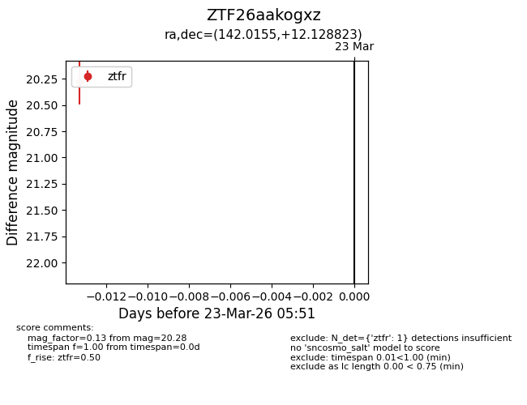
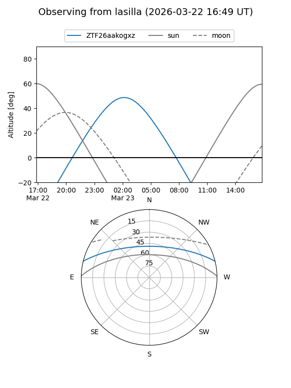
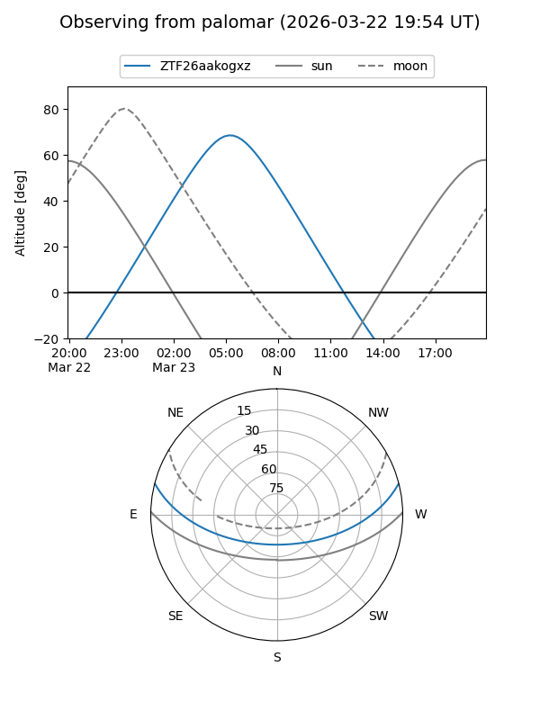

ZTF26aakogxz
Target ZTF26aakogxz at 2026-03-23 05:53
Aliases and brokers:
FINK: link
Lasair: link
ALeRCE: link
alt names
ZTF26aakogxz (ztf,fink_ztf)
Coordinates:
equatorial (ra, dec) = 142.0155,+12.12882
equatorial (HMS+DMS) = 09:28:03.72,+12:07:43.76
galactic (l, b) = (220.0373,+40.18303)
Flags:
Photometry:
last ztfr=20.28
1 ztfr detections
Lightcurve

Visibility


Additional plots